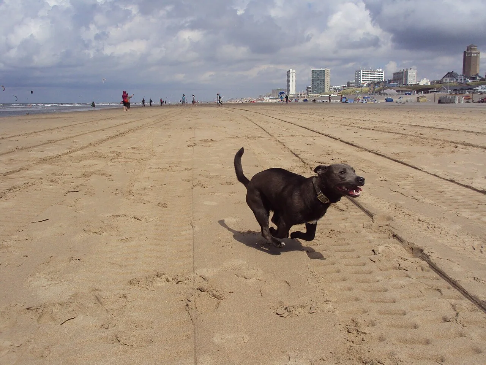

WINTER STAY WITH MY DOG / 2026–2027
今年の締めくくりも、
新年のはじまりも。
きみと伊豆へ。
温泉でほっとひと息。広いお部屋で、家族とのんびり。
年末年始は、愛犬も一緒の宿旅にしませんか。
「どんなふうに過ごしたい？」から選ぶ、修善寺の犬同伴プラン。気になる滞在が見つかったら、じゃらんで日程を選んで予約へ。
年末年始の犬旅温泉・コテージ広告｜このページのじゃらんリンクはA8.netのアフィリエイト広告です。

年末年始、どんな時間を過ごそう。
大晦日・お正月の滞在も、その前後のお休みも。犬同伴専用のプランを選んでいます。
和室2間とリビング。
みんなでくつろぐコテージへ。
ホテルラフォーレ修善寺｜ドッグコテージ
53㎡のお部屋で、愛犬と家族が思い思いにひと休み。夕食は伊豆・静岡の食材を取り入れたブッフェ、朝は和洋ブッフェで、一年の節目をゆっくり過ごす旅に。
12/31〜1/2泊の犬同伴・夕朝食付きプラン
和室2間＋リビング大型犬の受入記載あり
この犬同伴プランをじゃらんで予約へ →希望日・人数を選んで料金と予約条件を確認犬の条件・食事中の過ごし方
小・中型犬（一般的に25kg以下）2頭、または大型犬（一般的に25kg以上）1頭まで。受入不可犬種があります。犬1頭3,300円（税込）別途。レストランでは犬はお部屋でお留守番となります。夕食のため19時までに到着。自炊不可。宿泊同意書と接種後1年以内のワクチン・狂犬病接種証明書を事前提出してください。
夕食の時間も、
愛犬のそばで。
ホテルラフォーレ修善寺 山紫水明｜犬同伴・お部屋食付きプラン
夕食をお部屋で楽しみたいなら、この滞在を。温泉付き客室でくつろぎながら、愛犬と過ごす冬の休日に。年末の休暇や、お正月のあとにもう一泊したいときの選択肢です。
12/26〜12/30・1/3泊限定／夕朝食付き
※12/31〜1/2泊はこのプランの対象外です。
お食事・犬同伴条件の確認
夕食は19:00〜19:30にお部屋へお届け。朝食はレストランのブッフェで、犬は同伴できません。小型犬（一般的に10kg以下）2頭または中型犬（25kg以下）1頭まで。犬1頭3,300円（税込）別途。犬用の食事は持参。19時までに到着し、宿泊同意書・ワクチン・狂犬病接種証明書を事前提出してください。犬種等の制限と最新条件は予約前に宿へ確認してください。
今年は、愛犬も一緒に。
コテージで家族団らん。お部屋の温泉でひと息。夕食をゆっくり味わう時間。過ごしたい休日から、お気に入りのプランを選んでください。
掲載はプランの紹介です。空室や料金の保証ではありません。予約前に日付・人数・犬同伴条件・キャンセル規定をリンク先でご確認ください。